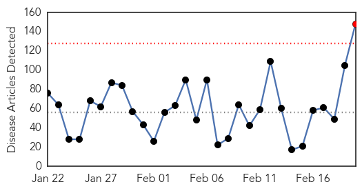
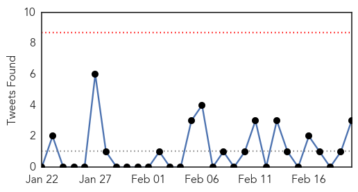
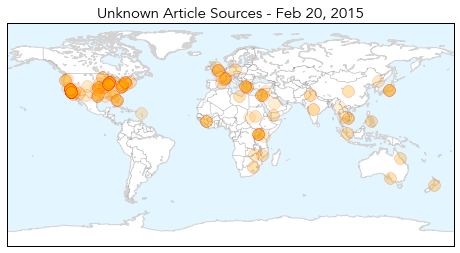

Measles
30-Day Web Trend
21 alerts, 5 warnings

30-Day Twitter Trend
6 alerts, 0 warnings

Article Locations

Article Confidences

Top Articles:
- 0.990
- Pediatricians join Public Health in urging vaccination for measles, other diseases
- 0.977
- Measles outbreak: What parents need to know about herd immunity - National
- 0.975
- Epidemiologist defends vaccination amid charges that vaccines don’t always work and actually may cause irreversible harm or even death
- 0.971
- USA goes from measles-free to 141 cases
- 0.967
- Disneyland measles cases genetically similar to Philippines outbreak
- 0.959
- Vaccination best protection from measles
- 0.944
- California health officials say may not find source of measles outbreak
- 0.936
- California health officials say may not find source of measles outbreak
- 0.936
- Potential Measles Exposure Sites Include Calif. Target, Walmart
- 0.928
- California health officials say may not find source of measles outbreak
- 0.919
- Yes, vaccinations do their part to help fight diseases
- 0.878
- Health District Officials: No Measles in Washoe County
- 0.858
- Get rid of loopholes for vaccinations
- 0.855
- Measles warning in St. Thomas and Elgin
- 0.845
- Craig health briefs for Feb. 14, 2015: VNA offers grief support group
- 0.841
- Dana Hills High School
- 0.820
- State has second-worst measles vaccination rate in U.S.
- 0.765
- Measles vaccination rates improving but potential for outbreak remains
- 0.761
- Public health department vaccination awareness campaign
- 0.760
- Measles outbreak in surrounding states sparks RMH to take precautions
- 0.743
- Zimbabwe to see 1st HIV vaccine trial
- 0.742
- As Debate Over Measles Vaccine Takes Center Stage, Lawmakers, Health Experts Experience Deja Vu
- 0.733
- State asks childcare facilities to track unvaccinated children
- 0.681
- UPDATE: Additional cases of measles reported in San Bernardino County
- 0.661
- CA health officials say may not find source of measles outbreak
- 0.623
- Blowing the antivaccine dog whistle again – Respectful Insolence
- 0.614
- Sen. Barbara Boxer slams anti-vaccination parents
- 0.589
- Sites in Redlands, Highland and Loma Linda identified as potential measles exposure locations
- 0.577
- Uganda: Uganda: Measles Outbreak DREF Final Report, n MDRUG035
- 0.565
- Vaccination win with imminent HIV vaccine, plus cervical cancer protection even stronger thanks to local research
- 0.554
- Amid US measles outbreak, few rules on teacher vaccinations
- 0.528
- The unexpected link between aborted fetuses and vaccines
- 0.522
- There’s more than one way to persuade people to vaccinate
Top Tweets:
-
No tweets found for Feb 20, 2015
Unknown
30-Day Web Trend
1 alerts, 0 warnings

30-Day Twitter Trend
0 alerts, 0 warnings

Article Locations
Article Confidences
Top Articles:
- 0.999
- Press Statement on Outbreak of Typhoid in Kampala - Uganda
- 0.957
- 'Superbug' outbreak not threat to LA County public health
- 0.947
- Superbug infection hits LA hospital after endoscopic procedure
- 0.946
- HEALTH CARE: Scope’s use scrutinized over ‘superbug’ scare
- 0.946
- Superbug Kills 2 at LA Hospital, 5 Others Infected, 179 Exposed
- 0.946
- Superbug infection hits LA hospital after endoscopic procedure
- 0.946
- 2 dead, 7 infected after exposure to fatal 'superbug' in California
- 0.945
- Superbug infection hits LA hospital after endoscopic procedure
- 0.945
- Superbug infection hits LA hospital after endoscopic procedure
- 0.944
- Superbug infection hits LA hospital after endoscopic procedure
- 0.944
- Superbug infection hits LA hospital after endoscopic procedure
- 0.944
- 2 dead, over 170 potentially exposed in 'superbug' outbreak
- 0.943
- Superbug infection hits LA hospital after endoscopic procedure
- 0.926
- 'Superbug' outbreak raises questions about medical tool
- 0.919
- CDC Says New Tick-Borne Virus May Have Killed Kansas Man
- 0.917
- Chicago Tribune
- 0.917
- Chicago Tribune
- 0.917
- Chicago Tribune
- 0.917
- Chicago Tribune
- 0.917
- Chicago Tribune
- 0.917
- Chicago Tribune
- 0.917
- Chicago Tribune
- 0.917
- Chicago Tribune
- 0.917
- Chicago Tribune
- 0.917
- Chicago Tribune
- 0.917
- Chicago Tribune
- 0.917
- Chicago Tribune
- 0.917
- Chicago Tribune
- 0.917
- Chicago Tribune
- 0.917
- Chicago Tribune
- 0.917
- Chicago Tribune
- 0.917
- Chicago Tribune
- 0.917
- Chicago Tribune
- 0.917
- Chicago Tribune
- 0.917
- Chicago Tribune
- 0.917
- Chicago Tribune
- 0.917
- Chicago Tribune
- 0.917
- Chicago Tribune
- 0.917
- Chicago Tribune
- 0.917
- Chicago Tribune
- 0.917
- Chicago Tribune
- 0.917
- Chicago Tribune
- 0.917
- Chicago Tribune
- 0.916
- France declares flu emergency as over two million cases recorded
- 0.914
- New details on mystery virus that killed Kansas man
- 0.913
- UCLA Medical Center officials to continue outreach to potential "superbug" patients
- 0.910
- Bat poo under the microscope as researchers seek Hendra virus answers
- 0.907
- Health Department Confirms 12 Cases Of Typhoid Fever In Garfield
- 0.899
- 'Superbug' outbreak raises questions about medical tool
- 0.897
- Rabies control in Visayas improved
Showing top 50 articles...
Top Tweets:
- 0.815
- Is the stomach flu really the flu? No, flu is a contagious respiratory illness. Learn more: http://t.co/Xh7enkb302
- 0.702
- CDC’s Health Policy Series discusses innovative ways to finance public health interventions. Read more here http://t.co/3Dhq9GWv8R
- 0.661
- RT: KSA reports 1 new MERS case, someone who appears to have caught the virus in hospital. Also a previous case died. ht…
- 0.661
- RT: KSA reports 1 new MERS case, someone who appears to have caught the virus in hospital. Also a previous case died. ht…
- 0.564
- KSA reports 1 new MERS case, someone who appears to have caught the virus in hospital. Also a previous case died. http://t.co/vDy6FfwqnB